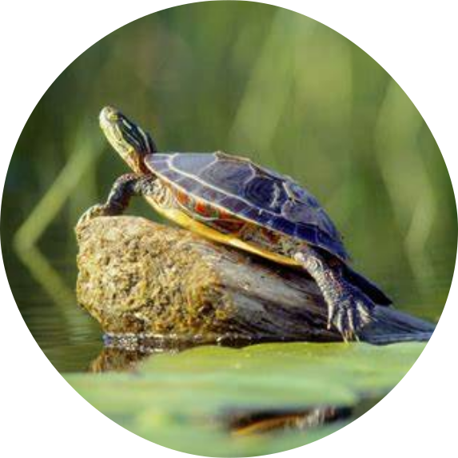
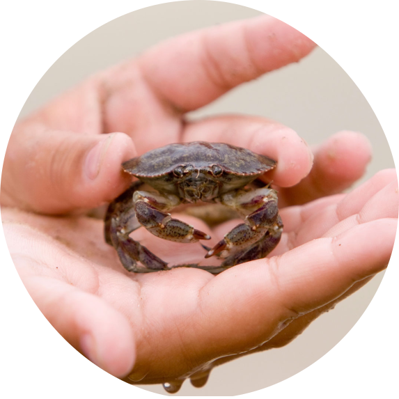

Aquatic pets make truly wonderful pets for people who don't have the time or physical space to devote to a
higher-maintenance companion animal. And under the right circumstances, aquatic pets can also be good "starter
pets" to teach children the responsibility of caring for a pet.
Goldfish
A popular pond fish which is small,
colorful, very hardy and one of the most commonly kept aquarium fish. They have a memory span of
at least three months
and can distinguish between different shapes, colors and sounds. If they left in the dark for a period of time,
they gradually change color until they are almost gray. They produce pigment in response to light, in a similar
manner to how human skin becomes tanned in the sun.
Guppy
A tropical fish, characterized by different colors, patterns, shapes, and sizes of fins.
It was named Girardinus guppii by Albert Günther in honor of Robert John Lechmere Guppy, who sent specimens of
the species from Trinidad to the Natural History Museum in London. Guppies have 23 pairs of chromosomes,
including one pair of sex chromosomes, the same number as humans. Once inseminated, female guppies can store
sperm in their ovaries and gonoducts, which can continue to fertilize ova up to eight months.
African Dwarf Frog
Not all frogs spend their days hopping around on land. In fact, the African dwarf frog
spends its entire life in the water. “These frogs can survive and thrive in a variety of environments from large
community aquariums to small betta bowls,” says Fish Tank Kings star and Aquatic Development Manager at Rolf C.
Hagen, Francis Yupangco. They’re easy to take care of. They just need clean water and an ample food supply. Make
sure your tank has a lid with no openings — they’re great escape artists.
Crayfish
If you think crayfish look a little like tiny lobsters, it’s because they are — kind of.
Crayfish are the smaller, freshwater cousins to lobsters, according to Yupangco, and can actually do well in
some community aquarium setups. They’re aggressive toward other crayfish, so they should be the only one in the
tank, and may go after bottom-dwelling or slow fish. Keep them with active, mid or top-level fish, like tetras
or angelfish.
Shrimp
“The variety of shrimp that are available to the aquatic hobby is astounding,” said
Yupangco. There are several varieties of shrimp, but most of them are very small, and they’re afraid of
predators. It’s best to keep shrimp in a tank away that’s species-specific, or with very small fish.
Mystery Snail
Snails move slowly and aren’t a lot of fun to sit and watch, but they’re colorful, and they’re fun to search for
every now and then, since you never know where they’ll show up. “They will crawl up the glass sides of the tank,
and over the decor in the aquarium,” said Nick Saint-Erne D.V.M., Certified Aquatic Veterinarian, resident
PetSmart veterinarian. They eat fish food and help clean algae from your tank and plants, so they’re a great and
easy addition to any tank.

Aquatic Turtle
“Another good aquatic pet is a water turtle, but these often cannot be housed with fish, and do require
extensive filtration to keep the water clean,” said Saint-Erne. Aquatic turtles are not for the low-maintenance
pet owner, though — they’re hard work. They eat live food, and they make big messes when they do it. They need a
lot of room — preferably tanks that are at least 40 gallons — and those giant tanks need to be completely
emptied and bleached once a week. Think long and hard before making the jump to turtle owner.

Mini Crab
The mini crab (sometimes called the fiddler crab) is an entertaining addition to any
tank. Trust me — I have one in my aquarium, and sit down to watch him at least once daily, even on my busiest
days. These tiny crabs are energetic, and it’s fun to watch him “crab walk” around the bottom of the tank.
Though they’re mostly aquatic animals, they do require plants for climbing and a small area above the waterline
to hang out. They’ll eat algae, and it’s fun to watch them dig through the rocks for it and stuff their faces
with their tiny little claws. These crabs live peacefully in community aquariums, but they will protect
themselves against aggressive fish, especially if the fish are small.